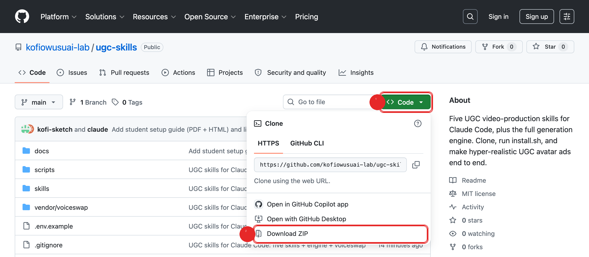

You will see these words a lot. Here is all they mean, in plain English.
A website where people store and share files of code. Think of it like Google Drive, but made for programs instead of documents.
One project's folder on GitHub. Ours is the folder of UGC skills. A repo is just a named box of files you can look at or copy.
Copying that folder from the website onto your own computer so you can use it. We will use the simplest way: a plain download.
You do not need a GitHub account for this. You are only downloading a folder, like downloading any file from the internet.
Type or click this address. Any browser works (Chrome, Safari, Edge):
https://github.com/kofiowusuai-lab/ugc-skills
You will land on the page shown below. It looks busy, but you only need two buttons on it.
Find the green Code button on the right (marked 1 below). Click it. A small menu opens. At the bottom of that menu, click Download ZIP (marked 2).

A file called ugc-skills-main.zip lands in your Downloads folder. Double-click it. It turns into a normal folder named ugc-skills-main. That folder holds all the skills. Leave it in Downloads for now, or drag it to your Desktop so it is easy to find.
The Terminal is a plain app already on your computer where you type commands instead of clicking. It looks bare, but you will only paste a few lines. Nothing here can break your computer.
Press Command (⌘) and Space together. A search box appears. Type Terminal and press Return. A small window opens. That is it.
Install Git for Windows from git-scm.com (click through the installer with the default options). Then open the Start menu, type Git Bash, and click it. Use that window for the steps below.
Four short steps. For each one, copy the line, paste it into the Terminal, and press Return. To paste in Terminal, use Command+V on Mac (right-click on Windows).
Type the word cd and one space, but do not press Return yet. Then drag the ugc-skills-main folder from your Desktop (or Downloads) and drop it right onto the Terminal window. It fills in the location for you. Now press Return.
# after the drag, your line will look something like this:
cd /Users/you/Desktop/ugc-skills-main
This copies the skills into the right place for Claude. Paste this and press Return:
bash install.sh
You will see a few lines of text scroll by. When it stops and shows the setup notes, it worked.
The skills use paid services (for voices and video). You paste your keys into a small settings file. First make the file:
cp .env.example .env
Open the new .env file (on Mac, run open .env; on Windows, open it from the folder in Notepad), paste your keys after the equals signs, and save. Then load it:
set -a; . ./.env; set +a
One last line downloads the small tools the skills use:
python3 -m pip install -r requirements.txt
Open Claude Code and type /. You should see the ugc- skills appear in the list. You do not need to remember any commands. Just describe what you want, like this:
you type:
make a 6-second UGC clip of a woman in a kitchen saying
"honestly this changed how I meal prep" using the brittney voice
Claude takes over from there: it plans the shot, generates the video, adds the voice, and hands you a finished clip. Start with short clips while you learn, then ask for full ads once you are comfortable.
| What you see | What to do |
|---|---|
| The skills do not appear in Claude | Close Claude Code and open it again so it re-reads the skills folder. |
command not found | You may have missed a word when pasting. Copy the whole line again exactly. |
| A message about a missing "key" | Run this line again in the same window: set -a; . ./.env; set +a |
| You closed the Terminal | Open it again (Part B) and run the cd drag step again before your commands. |
| Still stuck | Read README.md inside the folder, or ask in the Academy group. Copy the exact red error text so someone can help fast. |
| Word | Plain meaning |
|---|---|
| Repo | A project folder on GitHub. Ours holds the UGC skills. |
| Clone / download | Making your own copy of that folder on your computer. |
| Terminal | The app where you type commands instead of clicking buttons. |
| Install | Setting the files up so a program (Claude) can use them. |
| Skill | An ability you add to Claude. Here, making UGC videos. |
| API key | A password-like code that lets the tools use a paid service on your behalf. |